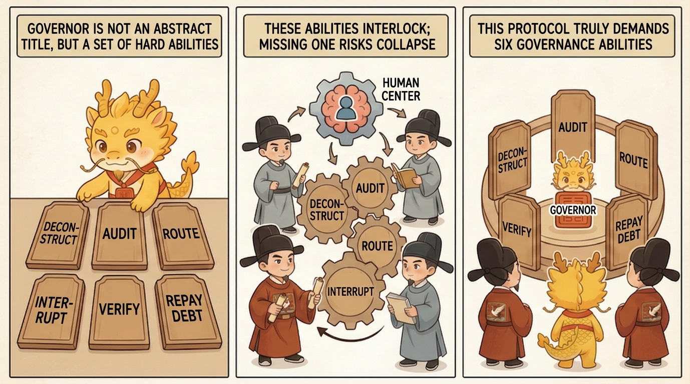
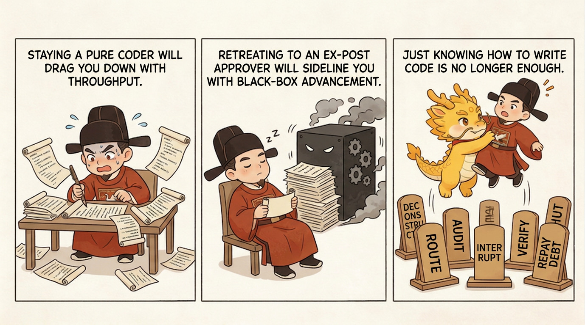

Deep Water
From Coder To Governor

From Coder to Governor: What This Protocol Requires of Developers
Table of Contents
- What This Page Solves
- Spotting the Problem: Why Just Knowing How to Code Is No Longer Enough
- Explaining the Problem: Why the Structure of Human Ability Gets Rewritten
- Solving the Problem: The Six Capabilities This Protocol Really Requires
- How This Differs from What Black-Box Schools Ask of People
- Common Misunderstandings
- One-Line Conclusion
- Related Pages
What This Page Solves
When many people first see phrases like "human-centered sovereignty," "dual-track audit," "cognitive debt," and "renewal" in Cyber-Ming-Protocol, their first reaction is often: is this making programming sound too managerial? Push one step further, and another question appears: if AI is taking over more and more execution, do developers eventually just need to state requirements, inspect outcomes, and act like approvers?
That is exactly what this page answers.
Inside this protocol, developers still absolutely need technical judgment. But the center of gravity of their work is no longer only "personally write more code with my own hands." Instead, it shifts toward a higher layer of responsibilities that are harder to automate away.
So this page does not discuss abstract personal qualities, nor does it argue that the whole CS world must become management science. It answers one narrower question:
Inside Cyber-Ming-Protocol, once part of the executor role has been outsourced to a high-throughput digital executor, what position does the developer actually occupy?
The conclusion should be nailed down immediately:
This protocol does not remove the human from the battlefield. It rewrites the human burden from low-level coding execution into higher-level decomposition, audit, routing, interruption, truth-checking, and debt repayment.

If the traditional coder's central question was "how do I write this block of code," then the governor in this protocol must keep dealing with a different cluster of questions:
- How should the task actually be cut up?
- Has the executor quietly swapped the target?
- Which materials should go where for review?
- When must we interrupt immediately?
- What actually counts as completion fact?
- When understanding starts to slip, how do we repay cognitive debt back into a manageable range?
So this is not a story about humans no longer needing technical knowledge. It is a story about this:
Technical value no longer appears only as "write a few more lines by hand." It appears more and more as the ability to govern the whole execution chain.
Spotting the Problem: Why Just Knowing How to Code Is No Longer Enough
In the era of fully manual coding, many capabilities were naturally stacked together:
- The person writing a part of the code was usually also the person who understood that part best
- The person doing the work was usually also closest to accepting it
- The person who later repaired a mistake was usually also the person most able to inherit its old history
So back then, "coding ability" often already bundled planning, execution, local acceptance, and local takeover together.
Once AI moves into the executor position, the structure changes.
You can still call the developer "a person who knows how to code." But if that is where your understanding stops, then in deep water you usually fall into one of two opposite degenerations, both equally dangerous.
First Degeneration: The Human Keeps Treating Themself as a Pure Coder
At that point the human tries to preserve the old working style by instinct:
- Personally watching every implementation detail
- Personally patching every local issue
- Keeping most of their energy pressed down onto low-level execution
The result is usually not greater safety. It is greater exhaustion. The executor position can now change many files quickly, try many chains quickly, and produce whole bundles of local implementation and explanation. If you still try to fight that by personally following every line, throughput will crush you. You will neither keep sovereignty nor enjoy the acceleration.
Second Degeneration: The Human Collapses into a Post-Facto Approver
The more common degeneration goes the other way. Since the executor keeps getting more capable, the human slowly starts imagining their own role like this:
- Only state broad requirements
- Only read summaries
- Only nod or shake their head at the end
That posture feels lighter, but it is more dangerous. Once the human retreats to this position, the most important powers in the development process start disappearing together:
- The power to judge the plan
- The right of physical routing
- The right to interrupt midstream
- The power to define completion fact
- The power to rebuild order after a window has decayed
At that point, the developer still appears responsible on paper, but in reality has already been demoted into a cleanup approver behind a black-box pipeline.
So the real issue is not "does the developer still write code or not?" The real issue is this:
Once execution has been partially outsourced, if the human does not elevate themselves into a governance position, they either get crushed by low-level execution or hollowed out by black-box progress.
Explaining the Problem: Why the Structure of Human Ability Gets Rewritten
Developers must shift from coder to governor not because technology has left the scene, but because several structural changes described in the earlier pages now collide at the programming site all at once.
First, Execution Power and Judgment Power Have Split Apart
This has already been explained in Dual-track Isolation Audit and Human-Centered Sovereignty. The executor can grow faster and faster. It can even outpace humans in pushing workflows and stacking implementation. But it cannot naturally own the power to declare what counts as complete.
That means the developer no longer merely participates in execution. The developer must participate in judgment. Otherwise pseudo-completion dressed up as "close enough" spreads immediately.
Second, Information Routing Has Itself Become a Governance Action
This point was also established in Why AI Coding Has Blurred the Boundary Between CS and Management. Copying logs, forwarding diffs, cutting context, and sending assertions out for re-audit used to look like support work in traditional engineering. In AI coding, those actions directly determine the world the executor and auditor are allowed to see.
Once that becomes true, the developer has to assume routing responsibility. Who sees what, in what order, and what remains unseen directly determines whether error gets amplified or truth gets hidden.
Third, Interruption and Takeover Have Shifted from Exceptional Moves to Routine Needs
In many older projects, interruption and takeover were occasional events. In AI collaboration, they become routine governance actions.
The reasons are straightforward:
- The executor may skip steps
- It may quietly swap the target
- It may pass simulation off as reality
- It may become dirty in long chains under its own old narrative
So the developer can no longer be only a requirement-giver. The developer must be able to stop the process, correct the line of march, and rebuild order at any time.
Fourth, Cognitive Debt Does Not Disappear on Its Own
Cyber Cognitive Debt: The Widening Gap, Warning Signals, and Credible Repayment already made this clear: AI makes system change move faster than trustworthy human understanding, so cognitive debt keeps being generated.
That means the developer's job no longer ends at "make the feature exist." It also includes:
- How to slow the growth of debt
- How to notice when control is slipping
- How to perform a credible repayment when necessary
That is obviously no longer a single-role "coder" job.
So the more precise statement is not "the developer becomes a manager." It is this:
The developer is rewritten into a still-technical human center whose main value increasingly appears as governance ability.
Solving the Problem: The Six Capabilities This Protocol Really Requires
At this point we can stop treating "governor" as an abstract noun and break it down into concrete capabilities.
The important move here is not to mythologize the human into an all-knowing being. It is simply to admit that inside this protocol the human center must keep bearing at least the following six capabilities. They interlock. Lose any one of them, and the whole protocol starts to buckle.
First, Decomposition: Compress Fuzzy Tasks into the Smallest Governable Units
Decomposition does not mean writing the whole spec by hand before anything begins, and it does not mean becoming a conventional project manager. What it really requires is the ability to force the executor to compress a fuzzy goal into small units with clear boundaries, explicit acceptance, and independent rollback.
That means you must at least be able to see:
- Which step is still too coarse
- Which step is mixing several risks together
- Which step lacks a verifiable acceptance standard
- Which step should scout or probe first rather than mobilizing the whole army immediately
Without this ability, later audit, chronicles, and white-box reconciliation all lose their handles. All you ever face is a large, vague narrative of "we more or less finished this part."
So the governor's first capability is not writing code better. It is cutting tasks down to a granularity where the executor cannot operate blindly.
Second, Audit: Keep Doubting Whether Plans, Assertions, and Evidence Actually Stand Up
Audit is not polite review, and it is not a final glance at code style. It is a sustained, institutionalized ability to interrogate.
You must be able to catch questions like these:
- Is this plan intentionally blurring the hardest part?
- Is this assertion supported by a real red light and a real green light?
- Was this artifact produced by the current run?
- Is a closing statement being used to impersonate completion fact?
More importantly, the governor not only knows how to ask a good question. The governor also knows where to ask it. Some errors should be interrupted at the planning stage. Some need audit in mid-execution. Some need final white-box physical reconciliation.
Without this auditing ability, the human is quickly demoted into a mild approver who starts from the assumption that whatever the executor says is probably half true.
Third, Routing: Decide What Materials Go Where, and Who Is Allowed to See What
Inside this protocol, routing is not menial labor.
Copying a log, forwarding a set of assertions, cutting out noise, or sending a key diff to Web audit matters not because it is busywork, but because it directly determines:
- What problem the auditor sees
- What judgment the executor receives in return
- Which noise was isolated
- Which false premises are prevented from spreading further
So the governor must be able to decide:
- What should be sent to Xu Jie right now
- What part of the situation Yan Song should be allowed to see right now
- Which contexts must be cut off and not inherited automatically
- Which historical materials should be preserved for future renewal and debt repayment
Once the human loses this routing ability, the executor and auditor slide back toward private coordination, and the human becomes the person who sees only the final conclusion.
Fourth, Interruption: Dare to Call a Halt Before the Error Has Time to Grow
This capability is easy to underestimate.
Many developers are not incapable of noticing that something is wrong. They are unwilling to interrupt for real, because interruption means:
- Some earlier feeling of progress must be denied
- The current rhythm must be rearranged by force
- The road that looked "almost done" may need to be torn down and redone
Inside Cyber-Ming-Protocol, however, interruption is not bad temper. It is one of the core powers of governance.
The governor must be willing to stop the process when, for example:
- The executor skips a step
- The executor starts rewriting history
- Simulation is being passed off as real execution
- Chronicles and refactoring handles have not been preserved
- The executor is already being dragged by its old narrative
Without interruption, even beautiful dual-track audit and white-box reconciliation degrade into passive cleanup after everything is already over.
Fifth, Truth-Checking: Push "Looks Successful" Back Down to "What Counts as Completion Fact"
Truth-checking is one of the least negotiable capabilities in the whole protocol.
The governor must keep pressing polished rhetoric back onto harder questions:
- Where is the real red light?
- Where is the physical evidence that the same problem moved from red to green?
- Where are the artifacts, logs, and external returns from the current run?
- Does this actually hold, or is it only being narrated as if it holds?
That is why White-box Physical Reconciliation: What Counts as Completion Fact sits so high in the protocol. It requires the developer not only to "understand code," but also to define completion, force out physical evidence, and judge truth from falsehood.
So truth-checking is not a decorative final step. It is one of the key abilities that separates the governor from an ordinary black-box user:
The governor is not better at appreciating summaries. The governor is better at forcing summaries back down into physical fact.
Sixth, Debt Repayment: Pull Understanding Back into a Controllable Range When Control Starts Slipping
This is the most easily overlooked capability, but by the time you reach module 03, it has become central.
As soon as a project enters long chains, multiple windows, and long cycles, cognitive debt will start growing. So the governor cannot only know how to advance. The governor must also know how to repay debt.
Here repayment does not mean brute-forcing your way through a whole sea of code. It means knowing how to use:
- Git chronicles
- Assertion and acceptance chains
- Fresh-window project reports
- Seven Stars Renewal and handover flow
to compress the current state of the project back into a snapshot that can be audited, questioned, and moved forward from.
In other words, the governor must know when they have already fallen behind the system, when to stop further advance, and when to perform a credible repayment before marching again.
Without this ability, even if the first five capabilities are strong, long projects can still drag the human back into black-box dependence through accumulated cognitive debt.
How This Differs from What Black-Box Schools Ask of People
If you place the six capabilities together, the difference becomes quite clear.
Black-box schools implicitly expect a person who is more like this:
- Able to state requirements
- Able to write prompts
- Able to look at results
- Willing to delegate authority to a more capable agent
Cyber-Ming-Protocol expects a person who is more like this:
- Able to decompose tasks
- Able to audit plans and evidence
- Able to hold cross-system physical routing authority
- Willing to interrupt at critical moments
- Able to make final white-box judgments
- Able to repay cognitive debt before it gets out of hand
The cleanest one-sentence summary is:
Black-box schools tend to train people to become better at letting go. This protocol tends to train people to become better at not letting go.
That "not letting go" does not mean doing everything by hand. It means:
- Not giving up the power to define truth
- Not giving up the right to interrupt the execution chain
- Not giving up life-and-death authority over context
- Not giving up responsibility for the future take-over-ability of the project
That is the real meaning of moving from coder to governor.
Common Misunderstandings
First Misunderstanding: A Governor Is Someone Who No Longer Needs Technical Ability
Exactly the opposite. Without basic technical judgment, you cannot cut tasks correctly, audit plans effectively, or tell when evidence is lying. The point here is only that technical value no longer appears through hand-written code alone.
Second Misunderstanding: A Governor Is Just a Traditional Manager or Process Officer
Not that either. A traditional manager does not necessarily need to watch red lights and green lights, logs, white-box reconciliation, and Git chronicles, much less retain cross-system physical routing authority personally. The governor here is still someone making judgment calls inside a technical battlefield.
Third Misunderstanding: Since Xu Jie Exists, the Developer No Longer Needs to Judge Anything
No. Xu Jie is a high-level audit aid, not a replacement for your own judgment. It can reduce your burden of judgment, but the final call on what passes, when to interrupt, and when to renew still belongs to the human center.
Fourth Misunderstanding: Copy-Paste, Interrogation, and Interruption Are Just Extra Friction
If you look only at the surface, they do look like friction. But in deep water, they are exactly how governance ability becomes visible. Without them, the developer quickly slides back into the soft trap of black-box automation.
Fifth Misunderstanding: Moving from Coder to Governor Means Developers Will No Longer Code at All
Also wrong. The governor may still personally write key code, inspect implementation, and modify structure. The difference is that the governor no longer treats "I personally wrote a bit more" as the only source of value. The governor becomes clearer about when to step in personally and when to push physical work back onto the executor.
One-Line Conclusion
What this page is really trying to nail down is not merely "developers will become more like managers," but this:
Once execution has been partially outsourced to a high-throughput digital executor, any developer who wants to preserve sovereignty in deep water must raise their main value from low-level coding execution up into higher-level governance actions: decomposition, audit, routing, interruption, truth-checking, and debt repayment.
Only then does the human avoid degrading from architectural ruler into a cleanup approver behind a black-box production line.
Related Pages
- Why AI Coding Has Blurred the Boundary Between CS and Management
- Dual-track Isolation Audit and Human-Centered Sovereignty
- Core Ritual 1: Atomic Execution Contract and Chronicles
- White-box Physical Reconciliation: What Counts as Completion Fact
- Cyber Cognitive Debt: The Widening Gap, Warning Signals, and Credible Repayment
- Seven Stars Renewal